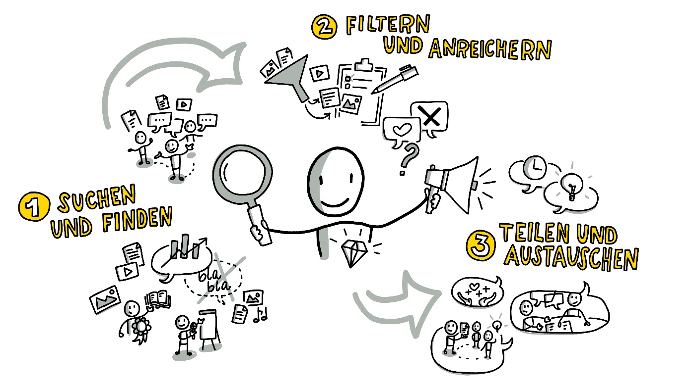

Grundlagen
Content Curation lernOS Circle Guide
Ein Leitfaden, wie Ihr relevante Inhalte finden, sinnhaft aufbereiten und teilen könnt
Du hast keine Ahnung, was Content Curation (oder auch "Kuratierung digitaler Inhalte" genannt) ist und würdest Dir gerne ein Bild davon machen?
Content Curation hilft Dir, wertvolle Informationen über Themen mit Hilfe von Inhalten und Experten zusammenzustellen, ohne das Rad dabei neu erfinden zu müssen. Du lernst Methoden, Formen und Ansätze kennen, wie Du über den Tellerrand Deines Themas schauen und Dein entstehendes Wissen mit anderen teilen kannst.
Wenn Du Dich über diesen lernOS Circle Guide mit Content Curation beschäftigst, wirst Du die Wirkmechanismen und Unterschiede von maschinellen Filtern (über Algorithmen) und menschlichen Filtern verstehen. Aber du lernst auch, Kuratieren für dich und dein Leben einzusetzen: um offener und sichtbarer zu arbeiten und zu lernen, mit der Flut an verfügbarem Wissen klar zu kommen, anderen zu helfen, Zeit zu sparen und Dinge zu verstehen. Ganz nebenbei erarbeitest Du Dir dabei Reputation und Expertise, innerhalb Deiner Organisation oder in Deinem Netzwerk. Du wirst lernen, dass auf Vertrauen basierende Netzwerke der Schlüssel sind, um in unserer komplexen Welt klar zu kommen und um schnell und effektiv zu lernen und innovativ zu sein.
Wenn Du mehr Details erfahren möchtest, um zu entscheiden, ob der Content Curation Leitfaden richtig für Dich ist, hör doch in Stefan`s Podcast zu Content Curation rein -- das hilft Dir bestimmt, ein paar Einblicke in das Thema zu gewinnen und Dich zu entscheiden, ob Du Dich die nächsten 13 Wochen intensiver mit Content Curation beschäftigen möchtest.
Der Podcast mit Christoph Haffner und Thomas Jenewein vom SAP Education Newscast zu Content Curation im Rahmen der Learntec Messe 2020 - die Episode dauert ca. 52 Minuten - (abgerufen 13.10.2020)

Grundlagen
Wenn Du überlegst, ob Du diesen Circle durchführen möchtest, dann schau Dir am besten einmal die nachfolgenden Grundlagen an, die wir für Dich zusammengestellt haben.
-
Was ist Kuratieren?
-
Wie kann man kuratieren definieren?
-
Warum sollte man kuratieren?
-
Was zeichnet Kurator*innen aus?
-
Wie funktioniert Kuratieren?
Was ist Kuratieren? Einen ersten Einblick bekommst Du über das Video, das Stefan im Rahmen eines Meetups der Colearn Community München #clc089 aufgenommen hat:\ ["Content Curation" von Stefan Diepolder beim Treffen der https://youtu.be/rn_AQuUxxIk

Wie kann man kuratieren definieren?
Herkunft des Wortes "kuratieren" [im Langenscheidt Lexikon], https://de.langenscheidt.com/latein-deutsch/curare, abgerufen am 16.06.2020)
Lateinisch "curare" bedeutet u.a.
...sich kümmern...
...sorgen...
...sich die Mühe nehmen...
...Lust haben...
Es gibt keine allgemeingültige Definition für Content Curation, aber für uns definiert diese kurze Zusammenfassung, angelehnt an Robin Good, sehr gut, um was es dabei geht:
"Content Curation ist die Kunst, digitale Informationsbausteine und Artefakte zu einem bestimmten Thema für ein spezielles Publikumsinteresse zu finden, filtern, organisieren und Wert hinzuzufügen und öffentlich zugänglich zu machen."
Robin Good: What is Content Curation? (abgerufen am 16.06.2020)
Kuratieren ist nicht nur eine Idee von ein paar internetaffinen Freaks. Auch wenn sie oft nicht so benannt werden, gehören die Fähigkeiten von Kurator*innen zu den Kernkompetenzen des 21. Jahrhunderts, wie sie z.B. auch die Mozilla Foundation herausgearbeitet hat.
Teilkompetenzen des Kuratierens wie share, compose, remix, evaluate, synthesize, search, connect, contribute gehören zu den 21st Century Skills, die von der Mozilla Foundation im Bereich Web Literacy propagiert werden. Wenn Du die Seiten aufrufst, kannst Du kuratierte Lernpfade zu den einzelnen Kompetenzen durchlaufen.

Abbildung: https://foundation.mozilla.org/en/initiatives/web-literacy/ (CC BY 4.0)
Warum sollten man kuratieren?
Unser Problem heute ist nicht mehr wie früher der Mangel an Information, sondern das Fehlen von verlässlichen und effizienten Filtern. Professor Clay Shirky bringt das sehr deutlich zum Ausdruck.
"It`s not information overload. It`s filter failure."
Quelle: Clay Shirky. AZQuotes.com, [Wind and Fly LTD], 2020. https://www.azquotes.com/quote/409865, abgerufen am 18.06.2020.
Er erklärt den Information Overload in 3 Minuten auf Youtube.
Die Welt, in der wir heute leben, ist von Überfluss gekennzeichnet. Um mit dem Überfluss klar zu kommen, sind effektive Filter notwendig. Egal wohin wir sehen, überall werden uns die ersten Entscheidungen abgenommen, ob wir das wollen oder nicht. Unsere Google Startseite, der Zugang zur größten Bibliothek der Welt, kennt und merkt sich unsere Vorlieben und unsere Suchhistorie haarklein -- und schlägt uns durch Algorithmen optimiert und gefiltert vor, was uns auf unsere Suche am meisten interessieren sollte.
Wer etwas tiefer einsteigen möchte - das Video "Beware of the Online Filter Bubbles" von Eli Pariser beschreibt, wie dieser Mechanismus funktioniert (09:05 Minuten)
Wir gehen in einen Supermarkt -- und finden dort die Produkte auf Augenhöhe, die wir aus Sicht der Supermarktbesitzer kaufen sollten -- und nicht die Produkte, die wir uns eigentlich wünschen wie z.B. besonders preisgünstige oder nachhaltige, in der Region produzierte Produkte. Und, und, und.... Machen wir uns bewusst - wir leben in einer Welt, die von Überfluss geprägt und für uns gefiltert und kuratiert wird - und in der bereits viele Entscheidungen und Möglichkeiten von technischen Systemen oder Menschen vorweggenommen werden.
Die Musik ist hier ein gutes Beispiel, ganz besonders auch für die Vielfalt und den Überfluss in unserer heutigen Welt: Noch im 17. Jahrhundert war Musik etwas ganz Besonderes. Sie konnte nur live genossen werden und Zugang hatten nur sehr wenige reiche und berühmte Menschen. Ab dem 19. Jahrhundert wurden dann technische Geräte erfunden, mit denen Musik wiederabspielbar gemacht wurde, von den ersten Grammophonen, Plattenspieler, Kassetten- und CD-Player bis hin zur Erfindung des mp3-Formats und damit der Digitalisierung der Musik. Inzwischen kann jeder seine persönliche Musik auf dem Smartphone immer und überall bei sich haben, oft aggregiert von mächtigen Portalen wie YouTube, Spotify oder iTunes. Wir finden alle möglichen Musikstile aus jedem Winkel der Welt und ganz schnell sind wir mit der Fülle der Möglichkeiten überfordert. Um dem zu begegnen, setzen die Musikportale von Algorithmen errechnete Empfehlungen ein, ermöglichen den Austausch und Empfehlungen unter Freunden stellen zum Beispiel auch eigene, gefilterte Angebote und Playlisten bereit.
Und wenn es um Wissen, Informationen und Inhalte geht, ist es noch extremer, denn Wissen wächst exponentiell. Wie die Abbildung unten zeigt, verdoppelte sich das Wissen im Jahr 2017 alle 13 Monate, Tendenz in Richtung "wesentlich schneller". Dazu tragen zum Beispiel auch einfache Systeme und Geräte, die für jedermann leicht und schnell zu nutzen und über Portale und soziale Medien blitzschnell und vielfach geteilt werden können, bei. Dabei einen guten Überblick zu behalten, die Spreu vom Weizen trennen zu können, ist wichtiger denn je.

Visualisierung von Katrin Mäntele \@kleinerw4hnsinn (CC BY)
Quelle: Knowledge Doubling Curve, aus: https://www.valamis.com/blog/why-do-we-spend-all-that-time-searching-for-information-at-work, abgerufen am 17.06.2020
Wir sind also stark auf Kuratierung angewiesen und vor allem in der digitalen Welt umgibt und beeinflusst sie uns ständig, oft auch ohne dass wir dies bewusst wahrnehmen. Deswegen finden wir es wichtig, sich mit Kuratierung und ihren Mechanismen auseinanderzusetzen.
Was zeichnet Kurator*innen aus?
Kurator*innen erschaffen und gestalten einen Raum, arrangieren die von ihnen ausgesuchten und gefilterten Artefakte und geben ihnen dadurch einen neuen, individuellen Wert. Wie z.B. ein*e Kurator*in einer Kunstausstellung. Ein*e Kurator*in für Content lernt selbst unglaublich schnell und effizient, indem er*sie sich selbst intensiv mit Themen auseinandersetzt, eintaucht, filtert und ordnet, selbst kuratiert. Besonders der Prozess des Anreicherns bzw. des Sensemaking, in dem man sich intensiv mit den gesammelten Inhalten beschäftigt, sie validiert, hinterfragt und etwas Neues, wie z.B. einen Blogpost, einen Podcast oder ein Video aus ihnen erschafft, initiiert einen effizienten und intensiven Lernprozess und hilft, gute und begründete Entscheidungen treffen zu können.
Gute Kurator*innen kennen ihr Publikum und dessen Bedürfnisse und Interessen. Sie sind sehr gut vernetzt, sowohl mit ihrer Zielgruppe (dem sogenannten \"Tribe\") als auch mit Wissensträger*innen und Vordenker*innen, die für \"ihr" Thema relevant sind. Sie denken und arbeiten ähnlich wie investigative Journalist*innen, die sich mit viel Fleiß und Akribie die besten Content Nuggets suchen, filtern und sammeln. Sie kümmern sich um ihr Publikum, indem sie ihm ihre besten Quellen bereitstellt und diesen einen persönlichen Wert hinzufügen und damit ihrem Publikum einen Grund geben, sich mit dem Inhalt oder Thema zu beschäftigen.

Visualisierung von Katrin Mäntele \@kleinerw4hnsinn (CC BY)
Wie funktioniert Kuratieren?
Content Curation, so wie es heute in vielen Bereichen genutzt wird, ist aus dem Überangebot an Informationen, die zum Teil schwer einzuschätzen und in Bezug zu bringen sind, entstanden. Es spiegelt die Notwendigkeit wider, relevante Informationen zu finden, zu filtern, festzuhalten, auf Fakten und Wahrheitsgehalt zu prüfen und dann anzureichern und Anknüpfungspunkte an bestehendes Wissen zu schaffen.
Eine mögliche Vorgehensweise für diese Schritte ist ein dreistufiger Prozess nach Harold Jarche (2014) (https://jarche.com/2014/02/the-seek-sense-share-framework/), der sich
- mit dem Suchen bzw. Finden von Inhalten, Information und
Experten befasst,
- dem Filtern und Organisieren und im weiteren, wichtigen Schritt
dann Anreichern dieser Inhalte mit Wert und Meinungen,
- und schließlich den Möglichkeiten des Teilens und Austauschens.
{width="6.33333552055993in" height="3.5520833333333335in"}Visualisierung von Katrin Mäntele \@kleinerw4hnsinn (CC BY)
Kompetenz um die Kurator*innen einzuschätzen (Werte) - Werte sollten klar sein
- Suchen bzw. Finden\
Es geht darum, interessante und relevante Informationen zu finden und auf dem Laufenden zu bleiben. Unter all dem „Lärm" die wirklich hilfreichen, lesens- und lernenswerten Beiträge vom „Geplapper" zu unterscheiden. Und sich über die Zeit ein Netzwerk von vertrauenswürdigen Quellen und Experten aufzubauen. So dass man nicht nur Informationen sucht, sondern sie auch automatisch über unser Netzwerk ihren Weg zu uns finden. Gute Kuratoren sind immer auch verlässliche Mitglieder in Wissensnetzwerken.\
- Filtern, Organisieren und Anreichern\
Filtern heißt die Spreu vom Weizen trennen, wissen, welchen Quellen und Menschen man vertrauen kann und wie man Wissensbereiche voneinander abgrenzt, um den roten Faden nicht zu verlieren. Im nächsten Schritt muss man für sich eine übersichtliche und zeitsparende Art finden, die Informationen zu speichern, sortieren und schnell auffindbar zu machen.\ Dann kann man im wichtigsten Schritt, dem Anreichern von Wert und Nutzen für die Zielgruppe, sinnvoll mit den Inhalten arbeiten und z.B. Zusammenfassungen schreiben, Querverweise herstellen, vergleichen, kritische Fragen stellen usw. Selbst zu kuratieren und aus verschiedenen Bausteinen und Artefakten einen Artikel oder Blogpost zu erstellen, ist eine sehr effektive und wirkungsvolle Methode, selbst zu lernen und Wissen aufzubauen.\
- Teilen & Austauschen\
Hier geht es darum, für sich ein Gespür und eine Praxis zu entwickeln, wie man seine angereicherten Inhalte wann und mit wem teilt, wie man Ideen und Erfahrungen in seinen Netzwerken weitergibt, Feedback einholt, Inspirationen bekommt oder in die Zusammenarbeit mit Kolleg*innen in der Arbeit geht.
Quellen & weiterführende Links:
-
Zusammenfassung des Meetups zu Content Curation mit Stefan Diepolder: https://colearn.de/clc-muenchen-clc089-content-curation-im-corporate-learning/ (abgerufen am 12.04.2020)
-
Kuratieren: https://de.langenscheidt.com/latein-deutsch/curare, abgerufen am 15.04.2020
-
Definition Content Curation: Angelehnt an Robin Good Content Curation Official Guide, abgerufen am 13.04.2020
-
Mozilla, Web Literacy: https://learning.mozilla.org/en-US/web-literacy
-
Lesetipp: \"Curation -- The Power of Selection in a World of Excess\" von Michael Bhaskar. Verbindet Industriegeschichte mit Kuratierung und zeigt in vielen anschaulichen Beispielen, in welchen Lebensbereichen wir schon mit Kuratierung vertraut sind.
-
Digitalisierung der Musikindustrie: https://blog.wiwo.de/look-at-it/2018/10/09/digitalisierung-der-musikindustrie-turnaround-durch-streaming-nach-schwund-um-zwei-drittel/, abgerufen 16.04.2020
-
Knowledge Doubling Curve by Buckminster Fuller https://www.valamis.com/blog/why-do-we-spend-all-that-time-searching-for-information-at-work, abgerufen am 18.04.2020
-
Good, Robin (2018): What is Content Curation URL: https://medium.com/content-curation-official-guide/what-is-content-curation-84212256e84, abgerufen am 23.03.2020
-
Shirky, Clay (2011): It`s not Information Overload, it`s Filter Failure URL: https://www.azquotes.com/quote/409865, abgerufen am 18.04.2020
-
Jarche, Herold (2014): The Seek Sense Share Framework URL: https://jarche.com/2014/02/the-seek-sense-share-framework/, abgerufen am 15.04.2020)
-
Janne Hietala, Jens Harju, Samu Kuosmanen (2019): Knowledge Doubling Curve by Buckminster Fuller URL: https://www.valamis.com/blog/why-do-we-spend-all-that-time-searching-for-information-at-work, abgerufen am 18.04.2020
-
"PKM -- A set of processes, individually constructed, to help each of us make sense of our world and work mor effectively
-
Zitat aus dem YouTube Video Personal Knowledge Management Workshop Intro 2013, abgerufen am 18.06.2020